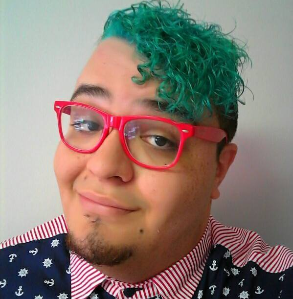
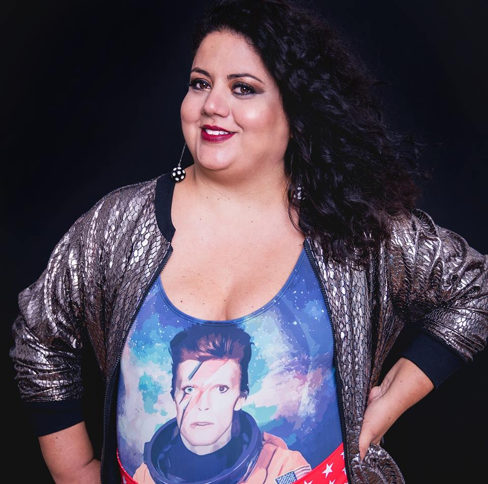

"É irreal exigir que qualquer pessoa seja ativista o tempo inteiro. Eu me coloco politicamente da forma mais efetiva: eu existo como mulher gorda e exijo meu espaço. Eu não me escondo, não me calo, não me diminuo. Eu não permito discurso gordofóbico pra cima de mim. Faço valer meus direitos."
"Ninguém precisa se aceitar porque ser gordo não é um defeito, e o que é horrível é a ação da gordofobia, não o ser gordo em si. A importância de falar sobre o tema é bem simples: normalizar corpos gordos e permitir a existência plena de pessoas gordas em sociedade."

Marco Magoga
"Eu quero mesmo que toda mulher que descubra o seu potencial possa também semear isso em outras mulheres, para que elas venham para a luta também. Sei que nem todo mundo vai militar, só que a militância que faz as coisas mudarem e eu tenho esperança que o blog motive mais pessoas a brigarem por seus direitos."
"Autoestima é poder se olhar no espelho e enxergar a mulher maravilhosa que ali reflete. É saber que o manequim é apenas um número e que a felicidade dela vai muito além do peso que aponta na balança. Autoestima é exalar o que de melhor há em você."
"Quando alguém nos mostra realmente como somos, e nos fala que merecemos sim nos enxergar da mesma forma, e não só isso, mas também sentir amor por nós mesmos, é um choque, depois de tanto tempo sendo ensinados o contrário disso."
"Para pessoas gordas, a moda tem um valor social extra, não dá para colocar como uma questão fútil ou frívola, porque é sobre acesso, é sobre permitir que essa pessoa consiga sair na rua."
"A moda é muito mais do que estar em dia com as tendências das passarelas. Moda é identidade, e o acesso à moda nos traz uma sensação de pertencimento e nos dá dignidade. A moda é uma forma de expressão que fala sobre quem somos e como queremos ser percebidos."

Flávia Durante
"É preciso ter como objetivo na atividade física, independente de qual seja, a busca pela saúde e não pelo emagrecimento. Para mim, saúde é estar bem consigo mesma, é ter um autocuidado e, para isso, é essencial se conhecer."
"Essa definição de obesidade do CID, que é o excesso de gordura corporal medida do peso proporcional a sua altura (IMC), é uma definição problemática por si só, porque isso é uma característica física que está sendo definida como um problema. Não tem nenhum outro elemento para colocar isso em outro contexto, é apenas uma característica física."